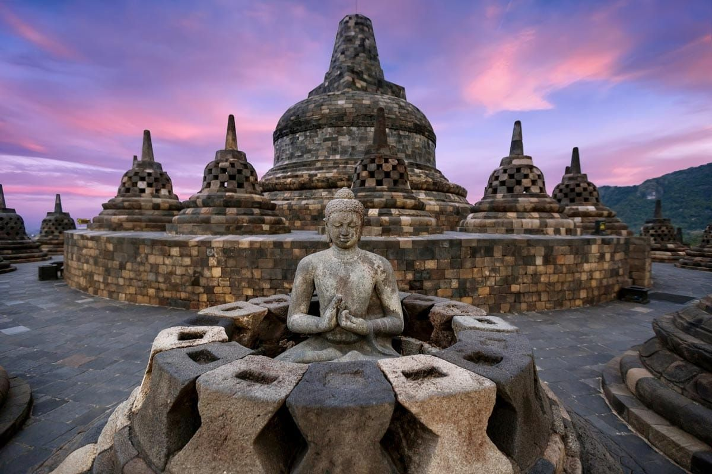
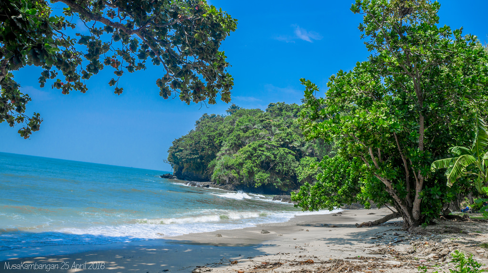
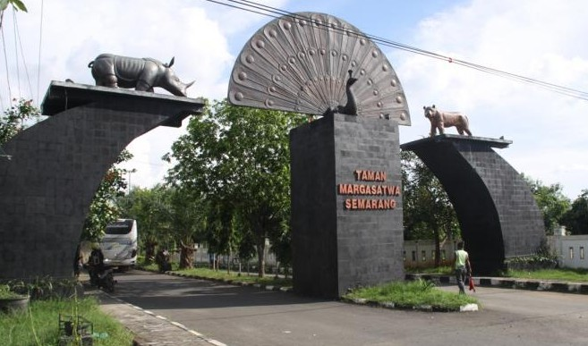

Candi Borobudur

Borobudur (bahasa Jawa: ꦕꦤ꧀ꦝꦶꦧꦫꦧꦸꦝꦸꦂ, translit. Candhi Barabudhur) adalah sebuah candi Buddha yang terletak di Borobudur,
Magelang, Jawa Tengah, Indonesia. Candi ini terletak kurang lebih 100 km di sebelah barat daya Semarang, 86 km di
sebelah barat Surakarta, dan 40 km di sebelah barat laut Yogyakarta.
Gunung Merapi (bahasa Jawa: ꦒꦸꦤꦸꦁꦩꦼꦫꦥꦶ, translit. Gunung Mêrapi) adalah gunung
berapi di bagian tengah Pulau Jawa dan merupakan salah satu gunung api teraktif di Indonesia. Lereng sisi selatan berada
dalam administrasi Kabupaten Sleman, Daerah Istimewa Yogyakarta.
Pantai Nusa Kambangan

Nusakambangan adalah sebuah pulau di Jawa Tengah yang lebih dikenal sebagai tempat terletaknya beberapa Lembaga
Pemasyarakatan (Lapas) berkeamanan tinggi di Indonesia. Secara Geografis, pulau ini masuk dalam wilayah administratif
Kabupaten Cilacap dan tercatat dalam daftar pulau terluar Indonesia.
Kebun Binatang Mangkang

Kebun binatang Mangkang (bahasa Jawa: ꦏꦼꦧꦺꦴꦤ꧀ꦫꦗꦩꦁꦏꦁ, translit. Kebon Raja Mangkang) merupakan salah satu tempat wisata
keluarga di kota Semarang. Kebun binatang ini terletak di Jl. Walisongo KM 16, tepatnya di seberang terminal Mangkang. Kebun
binatang ini memiliki luas 9 hektare.